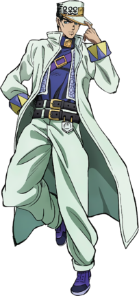
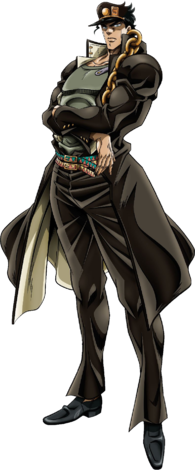
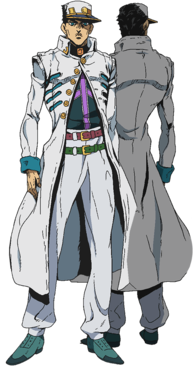
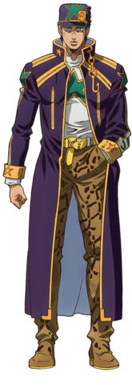
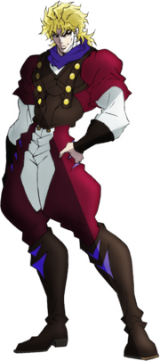
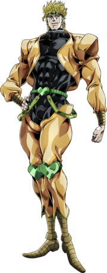

in this part main character (jotaro kujo) is going to kill main antoganist (dio brando) for his mother
in this part jotaros mother get sick with her stend so jotaro kujo and his team go too kill dio for 50 days if thay dont made it in 50 days his mother will die(idk how joseph say this)
with was motivation for jotaro kujo
main prototoganist is jotaro kujo
17 years old
195 cm (6 ft 5 in)
he have stand named - star platinum
star platinum is the close range stand with insane amout of streanth
star platinum can brake diamons that was in show and probebely he has more streanth
in part 3 he was the strongest wersion of himself
and he also apier in every part of jojo from part 1 to 6 also probebly in 7 and 8 part
he is trying to kill dio with his team kakyoin,polnaref,abdul and joseph




main antoganist is dio brando same ass dio brando from part 1
he is 120 years old
185 cm (6 ft 1 in) and 195[9] cm (6 ft 5 in) (Anime; with Jonathan Joestar's body)
his stand name is the world the same type ass jotaros stand and thay also can stop time
dio can stop time for 9 second
he also have form named dio over heaven and with that the world over heaven
dio over heaven is not canon but also it is because after pucci made reset he should get to heaven and achive his heaven form
dio over heaven fist apier in game named all star battle R


.jpg)